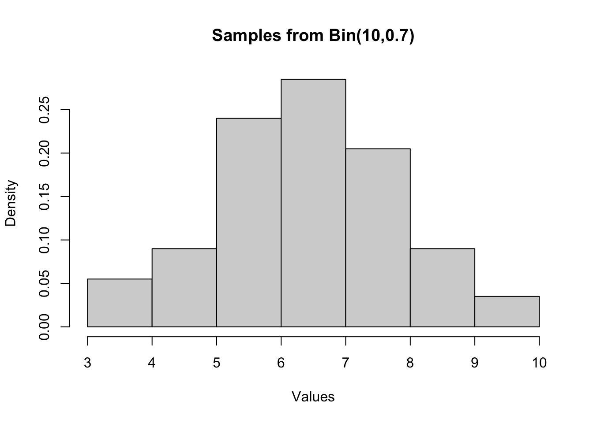

# Drawing 200 samples from a binomial distribution
sample_size <- 200
size <- 10
prob <- 0.7
binom_samples <- rbinom(sample_size, size, prob)ST117 Lab 3
sampling, distributions and probability
1. Statistical distributions with R
This lab session aims to familiarize you with the use of R for basic statistical analysis. We will cover various distributions, their properties, and how to use R to work with these distributions.
| Distribution | Parameters | Sample Command | Density Function | Distribution Function | Quantile Function |
|---|---|---|---|---|---|
| Uniform | min, max | runif(n, min, max) |
dunif(x, min, max) |
punif(q, min, max) |
qunif(p, min, max) |
| Binomial | size, prob | rbinom(n, size, prob) |
dbinom(x, size, prob) |
pbinom(q, size, prob) |
qbinom(p, size, prob) |
| Poisson | lambda | rpois(n, lambda) |
dpois(x, lambda) |
ppois(q, lambda) |
qpois(p, lambda) |
| Normal | mean, sd | rnorm(n, mean, sd) |
dnorm(x, mean, sd) |
pnorm(q, mean, sd) |
qnorm(p, mean, sd) |
| Gamma | shape, rate | rgamma(n, shape, rate) |
dgamma(x, shape, rate) |
pgamma(q, shape, rate) |
qgamma(p, shape, rate) |
| Beta | shape1, shape2 | rbeta(n, shape1, shape2) |
dbeta(x, shape1, shape2) |
pbeta(q, shape1, shape2) |
qbeta(p, shape1, shape2) |
1.1 Drawing Samples from a Given Distribution
1.2 Histogram
Next, let us plot the histogram of the samples.
# Plotting histogram with density overlay
hist(binom_samples, probability = TRUE, main = "Samples from Bin(10,0.7)", xlab = "Values", ylab = "Density")
1.3 Mean and variance
The following code calculates the mean, variance, and standard deviation of the samples.
# Calculating mean, variance, and standard deviation
mean_value <- mean(binom_samples)
sprintf("mean = %s", mean_value)[1] "mean = 7.12"variance_value <- var(binom_samples)
sprintf("variance = %s", variance_value)[1] "variance = 1.72422110552764"sd_value <- sqrt(var(binom_samples))
sprintf("standard deviation = %s", sd_value)[1] "standard deviation = 1.31309600011867"1.4 Probability and quantiles
Recall that we have \(X \sim \operatorname{Bin}(10,0.7)\).
- What is the probability \(P(X = 6)\)?
# use "d+dist" to calculate the density at a point
p_6 <- dbinom(6,10,0.7)
sprintf("P(X=6) = %s", p_6)[1] "P(X=6) = 0.200120949"
What if \(X\) is a continuous random variable?
Then d+dist(\(x\)) is the density of \(X\) at \(x\), and \(P(X=x)=0\) for all \(x\).
- What is the probability \(P(2\leq X \leq 5)\)?
# use "p+dist" to calculate P(X<=a)
p_less_than_5 <- pbinom(5,10,0.7)
p_less_than_1 <- pbinom(1,10,0.7)
p_2to5 <- p_less_than_5 - p_less_than_1
sprintf("P(2<=X<=5) = %s", p_2to5)[1] "P(2<=X<=5) = 0.1501246467"- What is the smallest value of \(a\) such that \(P(X\leq a) \geq 0.5\)?
# let's take a look at the distribution function first:
dist_df = data.frame(
a = 0:10,
p_x_lessthan_a = pbinom(0:10,10,0.7)
)
dist_df a p_x_lessthan_a
1 0 0.0000059049
2 1 0.0001436859
3 2 0.0015903864
4 3 0.0105920784
5 4 0.0473489874
6 5 0.1502683326
7 6 0.3503892816
8 7 0.6172172136
9 8 0.8506916541
10 9 0.9717524751
11 10 1.0000000000# can use "q+dist" to find such a
quantile <- qbinom(0.5,10,0.7)
sprintf("a = %s", quantile)[1] "a = 7"
What if \(X\) is a continuous random variable?
Then q+dist(\(q\)) is a one to one function giving precisely the \(a\) such that \(P(X\leq a)=q\).
1.5 Linear transformations of normal random variables
We have that if \(X\sim \mathcal{N}(\mu,\sigma^2)\), then \(aX+b\sim \mathcal{N}(a\mu+b,a^2\sigma^2)\). This property is useful when we want to transform a standard \(\mathcal{N}(0,1)\) to match a given set of mean and variance.
2. Assignments
Your turn!
The following is the Lab 3 worksheet designed by Yujing Lu.
- Please attempt these questions and write down your answers in the R Mardown workbook.
- Run your codes in your workbook and compare your results with your deskmate.
- Knit your workbook to publish a report in PDF or html.
2.1 Simulating and Visualizing Binomial Distribution
Generate a random sample of 1000 observations from a binomial distribution with parameters \(n=20\) and \(p=0.5\), then create a histogram to visualize the distribution.
Calculate the mean and standard deviation of the generated data. Compare these values with the theoretical mean and variance.
Flipping a coin 20 times, where it has 50% chance of getting a head. The total number of head \(X\) follows a Binomial distribution with \(n=20\) and \(p=0.5\). Find the probability of getting between 5 and 12 heads when tossing 20 coins, which is sum of the orange bars.
2.2 Calculating Probabilities from the Normal Distribution
- Suppose \(X \sim \mathcal{N}(0,1)\), find the value \(m\) (green point) such that \(P(X\leq m)=0.95\).
Given \(X \sim \mathcal{N}(2,0.7^2)\), find the probability of \(X\) being between 1 and 4.
Find the probability \(P(5\leq X\leq 12)\) for \(X \sim \mathcal{N}(10,5)\).
2.3 Approximating the Binomial with the Normal distribution
Approximate a Binomial distribution \(Bin(20,0.5)\) using a standard normally distributed \(Z\). Find the \(z_1\) and \(z_2\) such that \(P(z_1\leq Z\leq z_2)\) is the probability of getting between 5 and 10 heads.
hintWe know that \(Z\sim\mathcal{N}(0,1)\), how do we linearly transform \(Z\) to match the mean and variance of a random variable from \(Bin(20,0.5)\)?
Use R to calculate this probability using the standard normal distribution and check if it matches with Section 1(c).
3. Convergence
3.1 Experiments
- Plot \(X\) following a \(\text{Bin}(n,0.5)\) for different values of \(n=(3,10,25,100)\). Also, plot the approximated normal distribution \(Y \sim \mathcal{N}(np,npq)\). We can observe how the normal distribution becomes a good approximation as n increases.
sampleBin<-function(n,p){
A<-seq(-0.5,0.5+n)
x<-0:n
binomial.pdf<-dbinom(x,n,p)
tit<-paste0("Histogram of X~Bin(",n,",",p,")")
ymax<-1.2*max(binomial.pdf)
mu<-n*p
sigma<-sqrt(n*p*(1-p))
y<-seq(0,n,.1)
normal.pdf<-dnorm(y,mu,sigma)
plot(x,binomial.pdf,col="lightblue",xlab = "X", ylab = "P(X=x)",main=tit, type="h",
ylim = c(0,ymax),lwd=5)
lines(y,normal.pdf,type="l",col="red",lwd=2,lty=2)
}
par(mfrow=c(2,2))
sampleBin(3,0.5)
sampleBin(10,0.5)
sampleBin(25,0.5)
sampleBin(100,0.5)3.2 Some theory
Binomial as a Sum of Bernoulli Trials
The Binomial distribution can be understood as the sum of independent and identically distributed Bernoulli trials. A Bernoulli trial is an experiment with exactly two possible outcomes: success (with probability \(p\)) and failure (with probability \(1-p\)). When we perform \(n\) such independent trials, the sum of successes follows a Binomial distribution, \(\text{Bin}(n, p)\).
Mathematically, we have \[ X_\text{Bin} = \sum_{i =1}^n X_{\text{Ber},i}, \]
where \(X_{\text{Ber},i}\sim^{i.i.d} \operatorname{Bernoulli}(p)\), and \(X_\text{Bin}\sim \text{Bin}(n, p)\)
Central Limit Theorem
The Central Limit Theorem (CLT) states that, under certain conditions, the (normalised) sum of a large number of independent and identically distributed random variables will be approximately normally distributed, regardless of the original distribution of the variables. In the context of the Binomial distribution, as the number of trials \(n\) becomes large, the distribution of the sum of the Bernoulli trials will tend towards a normal distribution.
Central Limit Theorem
Suppose \(X_1\), \(X_2\), \(\dots\) is a sequence of i.i.d. random variables with \(\mathbb{E}[X_1] = \mu\) and \(\operatorname{Var}[X_1] = \sigma^2<\infty\). Then, as \(n\) approaches infinity, the random variables \(\sqrt{n}(\bar{X_n}-\mu)\) converges in distribution to a normal \(\mathcal{N(0,\sigma^2)}\):
\[ \sqrt{n}(\bar{X_n}-\mu) \to \mathcal{N(0,\sigma^2)}, \] where \(\bar{X_n}=\frac{1}{n}\sum_{i=1}^n X_i\)
Boundary Conditions
For the convergence of a Binomial to a Normal distribution to be a good approximation, certain boundary conditions should be met:
- The number of trials \(n\) should be large.
- Neither \(p\) nor \(1-p\) should be too small; a common rule of thumb is that both \(np\) and \(n(1-p)\) should be greater than 5.
When these conditions are met, we can use the Normal distribution as an approximation for the Binomial distribution, greatly simplifying calculations in many cases.
\[ \text{Bin}(n, p) \approx \mathcal{N}(np, np(1-p)) \]
This approximation is particularly useful for calculating probabilities for large \(n\), where direct computation using the Binomial formula becomes impractical.
3.3 Explorations
Plot \(X\) following a \(\text{Bin}(n,0.1)\) for different values of \(n=(3,10,25,100)\). Check if the normal distribution is a good approximation.
sampleBin<-function(n,p){
A<-seq(-0.5,0.5+n)
x<-0:n
binomial.pdf<-dbinom(x,n,p)
tit<-paste0("Histogram of X~Bin(",n,",",p,")")
ymax<-1.2*max(binomial.pdf)
mu<-n*p
sigma<-sqrt(n*p*(1-p))
y<-seq(0,n,.1)
normal.pdf<-dnorm(y,mu,sigma)
plot(x,binomial.pdf,col="lightblue",xlab = "X", ylab = "P(X=x)",main=tit, type="h",
ylim = c(0,ymax),lwd=5)
lines(y,normal.pdf,type="l",col="red",lwd=2,lty=2)
}
par(mfrow=c(2,2))
sampleBin(3,0.1)
sampleBin(10,0.1)
sampleBin(25,0.1)
sampleBin(100,0.1)
Your turn!
Explore the influence of \(p\) on convergence speed. Consider distribution like \(Bin(100,0.1),\ Bin(100,0.01),\ Bin(10000,0.01)\).